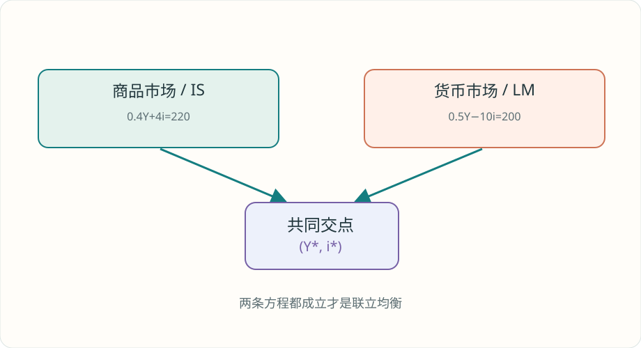
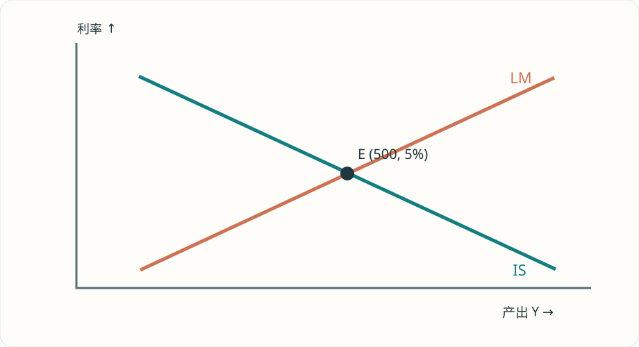
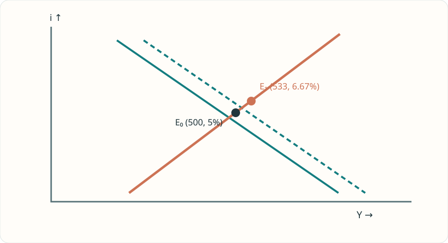
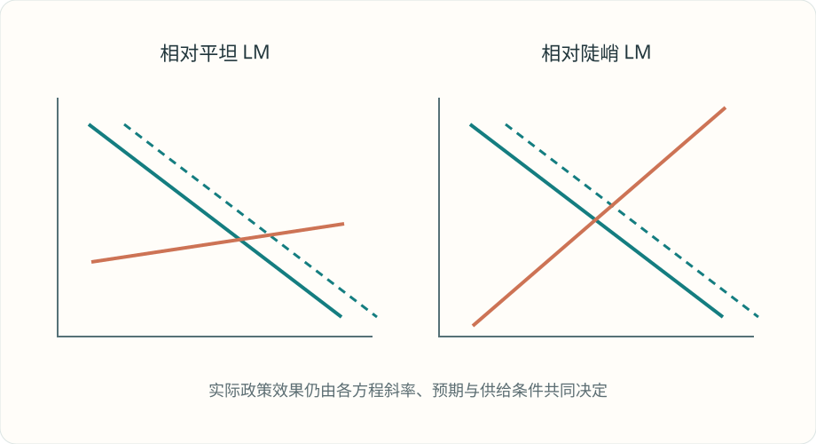

IS–LM 联立均衡：两条曲线如何共同决定收入与利率
同一笔财政支出，为什么在固定利率的模型中拉动 50，在联立利率反馈后却可能只拉动 33.33？把商品与货币市场的两条方程放在同一个平面上。
为什么不能只看 IS 曲线上的财政乘数？
商品市场告诉我们：给定利率，计划总支出等于产出时的收入是多少。货币市场则告诉我们：给定产出，愿意持有的实际货币余额如何决定持币机会成本。联立均衡要让同一个（Y，i）同时满足两项约束；若单独把政府购买加进 IS，却让利率不变，只计算了一个局部反应。
我们先设置可完整手算的构造经济：价格 P 和预期通胀短期固定；边际消费倾向 c=0.6，投资对利率的敏感度 b=4，货币需求参数 k=0.5、h=10，实际货币余额 m=M/P=200。利率 i 输入单位为百分点数值，不是小数 0.05。IS 的投资利率与 LM 的名义机会成本在此仅因预期通胀固定而用同一个 i 简化表达。

从两条均衡条件手算交点
将自主支出汇总为 A=220，商品均衡为 (1−c)Y+bi=A，因此 0.4Y+4i=220。固定真实货币余额时，货币市场均衡为 kY−hi=m，即 0.5Y−10i=200。
由 LM 得 i=(0.5Y−200)/10=0.05Y−20。代入 IS：0.4Y+4(0.05Y−20)=220，所以 0.6Y=300。均衡为 Y*=500、i*=5%；回代校验，商品市场 200+20=220，货币市场 250−50=200，双方都成立。

财政扩张会不会完全形成产出？
在同样参数下，政府购买增加 20，相当于 A 增加 20。在固定利率的凯恩斯交叉中，产出增量应为 20/(1−0.6)=50。但 LM 不变时产出提高会增加货币需求，利率被推高，私人投资受到部分挤出。
联立解给出 D=0.4+4×0.5/10=0.6，因此 ΔY=20/0.6≈33.33，Δi=(k/h)ΔY≈1.67 个百分点。新均衡约为 Y=533.33、i=6.67%。私人投资变动 ΔI=−4×1.67≈−6.67，而总需求增量再经消费反馈成为 33.33；这就是简化模型的部分挤出，不是财政实际政策乘数的通用估计。

同时改变财政支出与货币余额
教学基准 A=220、m=200、c=.6、b=4、k=.5、h=10。调整输入，两个市场交点、曲线及文字一起变化。
货币扩张与财政扩张不能互换概念
若 A 不变但实际货币余额 m 增加 20，则 LM 向右/向下移动，联立解 ΔY=(b/h)×20/D=13.33，利率约下降 1.33 个百分点。相比之下财政扩张提高利率，货币余额外生增加在这一特定旧式模型中压低利率。它们的不同方向取决于给定货币余额这一建模规则。
| 冲击（其余条件固定） | 收入方向 | 利率方向 | 适用边界 |
|---|---|---|---|
| 财政自主支出 ↑ | ↑ | ↑ | 固定 m、IS 与 LM 都参与调整 |
| 外生实际货币余额 ↑ | ↑ | ↓ | 固定 A，固定价格且货币余额可外生变动 |
| 政策直接下调短期目标利率 | 取决于消费投资及预期 | 政策利率目标 ↓ | 应改用 IS–MP 或明确央行反应规则 |
当央行实际采用利率目标并通过充裕准备金制度实施政策时，不能既假设 M/P 固定又假设短端利率无条件固定。应明确采用哪一种货币政策闭合条件。
流动性陷阱与完全挤出的数学极端
教材常讨论两种极端：一是货币需求对利率极敏感，LM 局部近水平，财政扩张引起的利率反馈可能较弱；二是货币需求对利率极不敏感，LM 很陡，财政扩张的利率反馈较强。但平坦、陡峭与完全失效不是同义词，结论还依赖投资利率敏感度 b、价格黏性、央行政策反应和供给限制。

来源与进一步阅读
以下机构或原始研究帮助核对概念与经验边界。本文数值图示和实验是专为教学设计的构造例子，不是历史实测数据。
- 纽约联储 — 利率实施与充裕准备金框架 · policy framework
- OpenStax — 支出产出模型 · goods market
- 美联储 — 利率与真实经济传导 · mechanism